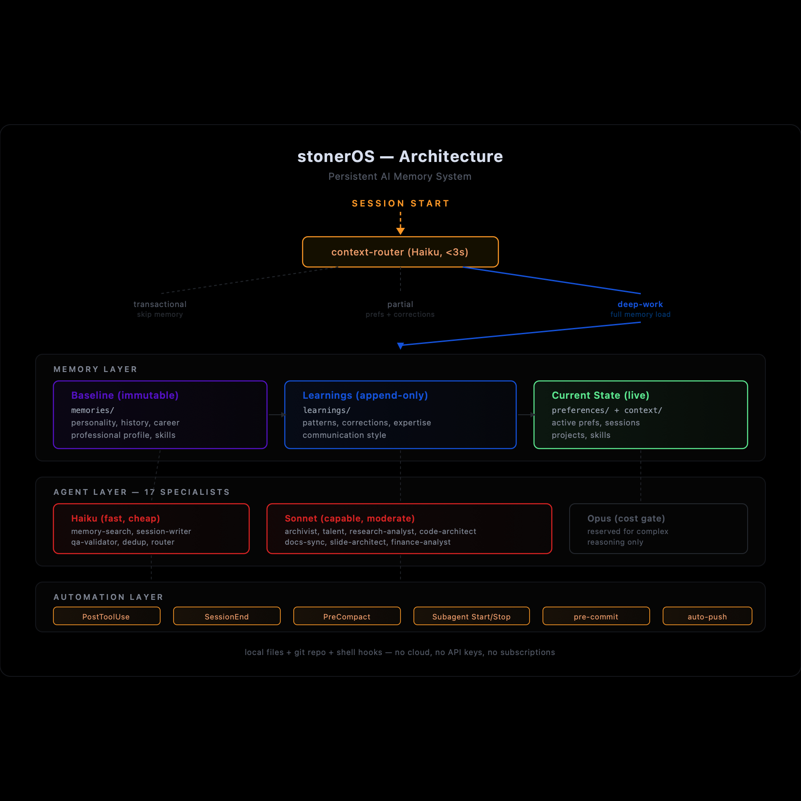

The Problem with “Just Put It Somewhere”
When I started building stonerOS, I had a very simple system: one file called context.md that contained everything. My preferences. My career history. My tech stack. My current projects. Everything.
It lasted about three days.
By day four, the file was 600 lines. The AI was loading the entire thing at the start of every session. Unrelated facts lived next to each other. Finding anything meant reading everything. And when I needed to update a preference, I had to manually hunt for the right section and make sure I hadn’t accidentally introduced a contradiction.
I had built a junk drawer.
The problem isn’t unique to AI memory systems. It’s the default state of any information system that grows without structure. You start with a flat list because it’s simple, and you end up with a pile because structure wasn’t built in when the pile was small.
The fix was architecture—deciding upfront what goes where and why.
Three Layers, Three Behaviors
The core architectural decision in stonerOS is separating memory into three distinct layers. Each layer has different characteristics, different update rules, and different implications for how the AI uses it.


Layer 1: Immutable Baseline
Read-onlylearnings/baseline_insights.md
This file contains foundational facts about who I am—professional background, personality patterns, communication style, values, cognitive tendencies. Things that are true about me at a deep level and unlikely to change on a weekly basis.
The key property: it’s read-only. No agent writes to it. No automated process updates it. When something in this layer needs correction, the fix goes into learnings/corrections.md as an override—not into the baseline file itself.
Why? Because baselines that can be freely overwritten stop being baselines. The value of this layer is that it’s stable reference material. If it changes every week, it’s not baseline—it’s just another log.
The read-only constraint forces a useful discipline: corrections are explicit. If baseline_insights.md says I worked at a company with 15,000 employees and the actual number is 4,000, that fact gets explicitly corrected in corrections.md. Any agent reading the baseline is also required to load corrections. The error doesn’t silently propagate—it’s visibly fixed.
But “immutable” doesn’t mean “frozen forever.” It means “frozen between deliberate checkpoints.” Corrections accumulate in the overlay file, and periodically—quarterly in my case—I review them and merge the validated ones back into the baseline. The old version gets archived. The corrections file resets. A new baseline is minted.
The first re-baseline happened about six weeks after the system was created. Three factual errors in the original baseline—an employee count, a layoff date, a project timeline—had been living as corrections the entire time. Every agent that loaded the baseline also had to load the overlay and mentally reconcile the two. After the merge, the baseline just said the right thing. The overlay shrank from twelve entries to nine.
This is the difference between write discipline and permanent fossilization. The baseline is protected from casual writes—no agent can update it during a session, no automated process touches it. But a human-triggered re-baseline is a deliberate act with version history. It’s version control for identity, not a time capsule.
Layer 2: Append-Only Learnings
Append-onlylearnings/patterns.md · learnings/expertise.md · learnings/communication.md · learnings/corrections.md
This layer accumulates observations over time. New entries get added. Old entries stay. Nothing gets deleted.
The update pattern is the /remember command. When something is worth capturing—a behavioral pattern, a new preference, a correction to an old assumption—it gets written into the appropriate file with a date, context, and an implication for future interactions.
The entries are structured:
## YYYY-MM-DD: [Title]
**Type**: semantic | episodic | procedural
**Context**: [What prompted this]
**Observation**: [What was observed]
**Implication**: [How this affects future interactions]
**Tags**: #tag1 #tag2Three entry types exist for a reason. Semantic entries capture facts and corrections. Episodic entries capture what happened—“during the March job sprint, I noticed X.” Procedural entries capture patterns and workflows—how to do things. Mixing types in a flat list makes retrieval harder; separating them by type makes both writing and searching more reliable.
The append-only rule does create one problem: accumulation. After enough sessions, the learnings files grow long enough that loading them all into context becomes expensive. The dedup-validator agent—a Haiku-tier subagent—runs before every write to check for semantic near-duplicates. If a new observation is substantively the same as an existing one, it doesn’t get written. If it supersedes an older entry, the older entry is flagged. The files grow, but they don’t grow with noise.
Layer 3: Current State
Overwritablepreferences/current.md · context/session_YYYYMMDD.md
This layer holds active, changeable information. What I’m working on right now. What my current priorities are. What happened in the last few sessions.
Unlike the learnings layer, current-state files get overwritten. preferences/current.md reflects what’s true today, not a historical record. Session files are created fresh each session.
The distinction matters for how the AI uses each layer. When I ask “what should I focus on today?”, the AI looks at current state. When I ask “what patterns have you noticed about how I work?”, it looks at learnings. When it needs to understand my baseline personality, it looks at the immutable layer. Different questions, different sources, appropriate for each.
Why Plain Files Beat a Database
Why not use a real database? SQLite, a vector store, something with actual query capabilities?
I considered it. Here’s why I didn’t:
I can open learnings/patterns.md in iA Writer on my Mac or iPhone and read it. The AI reads it as part of its context window—no translation layer, no schema, no query syntax. The file is the data and the interface simultaneously.
Every change to every memory file is automatically committed and pushed to a private repository. If the system ever corrupts a file or makes a wrong update, I can see exactly what changed and roll it back. Try getting that kind of transparency from a SQLite database.
Anthropic will change APIs. Claude Code will add and deprecate features. Plain text files with consistent formatting will outlast any specific tooling. I’ve already lived through two major Claude Code updates during this build—the files survived both.
I load most of the memory system at session start anyway. The context window is large enough to hold the files I need. For targeted searches, a memory-search agent runs a focused lookup. Full-text search over markdown files is fast and sufficient.
The tradeoff: plain files don’t scale to millions of entries. I’m one person with a few hundred KB of accumulated observations, so that’s not my problem.
The Naming Problem
File and directory naming sounds like a minor implementation detail. It isn’t.
When the system was young and I was the only one navigating it, arbitrary names were fine. stuff.md didn’t matter because I knew what stuff.md was. But once you have 21 agents loading different combinations of files at session start, names become a coordination mechanism. The wrong file in the wrong agent’s loading path means outdated context, irrelevant noise, or missing facts.
learnings/ — by category, not by date
patterns.md contains all behavioral patterns, ever. corrections.md contains all corrections, ever. Searching for a specific type of learning means looking in one file, not scanning a directory full of dated archives.
context/ — by date, not by category
session_20260310.md contains everything from March 10. Sessions are chronological records, not thematic ones—date-first naming makes navigation obvious.
.claude/context/ — agent artifacts
Naming pattern: [agent]-[topic]-[date].md. A research agent’s competitive analysis lands at research-drift-competitive-20260310.md. Flat-named, agent-prefixed, dated. Any file in that directory is an agent artifact, not a memory file.
temp/ — ephemeral
Gitignored and iCloud-synced but not tracked. Draft outputs, experimental work, one-off analysis. It clears periodically and nothing in it is assumed to persist.
The naming system also enforces role separation. A file in memories/professional/ is a human-facing career artifact. A file in learnings/ is AI-context data. A file in .claude/context/ is agent staging output. The path tells you what the file is for before you open it.
How It Stays Organized as It Grows
The honest answer: it doesn’t stay organized automatically. Structure has to be maintained.
Three mechanisms keep the junk drawer from returning:
Only one agent—session-writer—is allowed to write to learnings/, preferences/, and context/. Every other agent that wants to update memory has to route through it. This eliminates write races and guarantees that the memory layer has one coherent update process. One writer, one point of control.
Before session-writer writes any new entry, it calls dedup-validator—a Haiku-tier agent that costs fractions of a cent per check. The validator returns one of three verdicts: UNIQUE (write it), SUPERSEDE (this replaces an older entry, flag the old one), or DUPLICATE (this already exists, skip it). The learnings files accumulate signal, not repetition.
Documentation about the system—agent counts, slash command lists, memory layer descriptions—drifts from reality as the system evolves. The /docs-sync command runs an agent that compares documentation against the actual repo state and patches discrepancies. If your system changes frequently, documentation has to be a process, not a deliverable. A once-written README is wrong within two weeks.
This is the unglamorous part. File names and directory structure and naming conventions. Nobody gets excited about it.
But it’s why the system still works a month later. The exciting parts—the agents, the automation, the moments where the system does something I didn’t explicitly ask for—all run on top of this foundation. Get the foundation wrong and nothing else holds up.
Next: the agents that actually do the work.